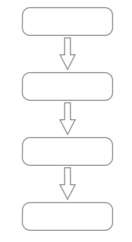
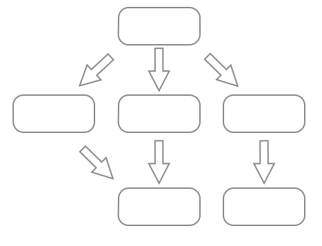
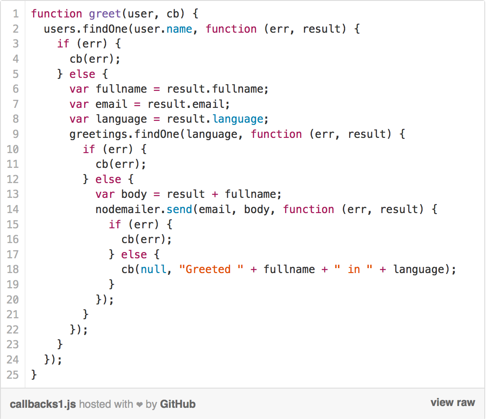
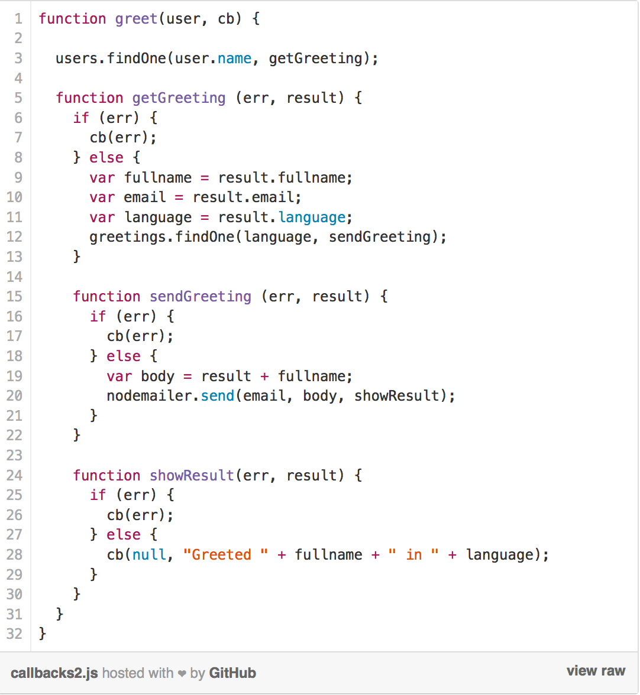
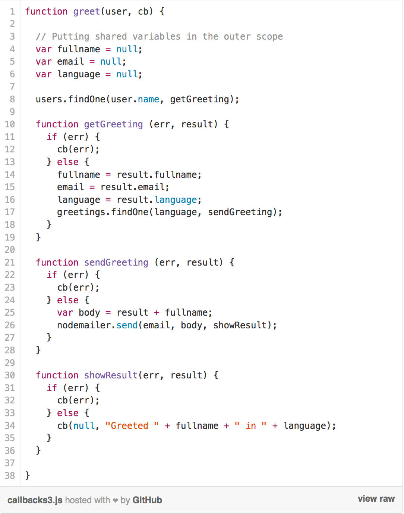

I <3 Callbacks
Taming the Pyramid of Doom
(the simple way)About Me
Darren DeRidder / @73rhodes
Alcatel-Lucent - Motive Mobile Security
Real-time, AAA, Telecom, Network & Mobile Security
Mobile World Congress
Blackhat Security Conference
Ottawa JavaScript
Synchronous
Synchronous Programming
- Linear
- Easy to understand
- Functions return values
- Code reads like a story
Synchronous Code
function add (a, b) {
return a + b;
}
var c = add (9, 33);
myElement.innerHTML = c;
Asynchronous
Asynchronous Programming
- non-linear
- harder to reason about
- choose-your-own-adventure
- callbacks
Asynchronous APIs
- AJAX
- HTML5 Geolocation
- HTML5 Web Workers
- IndexedDB
- Node.JS
Asynchronous Code
$.ajax({
type: 'POST',
url: "path/to/api",
data: "banana=yellow",
success: function (data) {
alert("Success: " + data);
}
});
Continuation Passing Style
do something (
with these parameters,
afterwards call this function with the result
)
fs.readFile('todo.txt', function(err, data) {
if (err) {
console.log('Error reading file: ' + err)
} else {
console.log(data);
}
});
Leads to...
Callback Hell
fs.readdir(source, function(err, files) {
if (err) {
console.log('Error finding files: ' + err)
} else {
files.forEach(function(filename, fileIndex) {
console.log(filename)
gm(source + filename).size(function(err, values) {
if (err) {
console.log('Error identifying file size: ' + err)
} else {
console.log(filename + ' : ' + values)
aspect = (values.width / values.height)
widths.forEach(function(width, widthIndex) {
height = Math.round(width / aspect)
console.log('resizing ' + filename + 'to ' + height + 'x' + height)
this.resize(width, height).write(destination + 'w' + width + '_' + filename, function(err) {
if (err) console.log('Error writing file: ' + err)
})
}.bind(this))
}
})
})
}
})
Leads to...
Control Flow Libraries
lots and lots of them
yuemeng $N async-mini async.js async backbone-callbacks begin condvar chainsaw channels cloudd ctrl deferred deferred-queue each eventproxy finish first flow-js flowless funk futures galaxy gate gene groupie ice-stream Ignite jam JobManager jscex-jquery LAEH2 locker make-flow miniqueue narrow nestableflow neuron node-async node-block node-chain node-continuables node-cron node-crontab node-fnqueue node-inflow node-parallel node-promise node.flow noflo nThen nue observer pausable pipette poolr promise q QBox Rubberduck statechart SCION serialize seq Signals simple-schedule Slide sode.js Step stepc streamify suspend taskman timequeue TwoStep when zo.js y-yield ...
and 1,847 more...
Promises?
Removed from Node core in 2010 by Ryan
Suggesting that promises should go back in core
 http://nodejsreactions.tumblr.com/post/65344663524
http://nodejsreactions.tumblr.com/post/65344663524
...plus Trever Norris, Isaac Schlueter, Fedor Idutny, Mikeal Rogers, Ryan Dahl, Rodd Vagg... (the whole node core dev team)
Node core philosophy
- decisions that lead to maximum compatibility
- keep core small and light
- high level flow-control abstractions in user libs
some thoughts on promises
Simple Rules for Escaping Callback Hell
- Use named functions for callbacks
- Use nesting only to enclose variable scope
- Return when invoking the callback
The Pyramid of Doom
Named Callbacks
- Avoid non-trivial anonymous functions
- Put function declarations after code that uses them
somethingAsync(params, namedCallback);
function namedCallback(err, result) {
// handle error, result
}
Named Callbacks
Nest for Scope
Nested functions share variables in the enclosing scope
function foo() {
var x = 1; // in foo's scope
function bar() {
var y = 2; // in bar's scope
console.log(x + y); // 3
}
function fizz() {
var z = 3; // in fizz's scope
console.log(x + z); // 4
}
console.log(y); // undefined
}
Nest for Scope
Return when invoking callbacks
function myAsyncFunction (params, callback) {
// You do something asynch...
// You handle the result
function handleResult(err, result) {
if (err) {
return callback(err);
}
// do something with data
return callback(null, data);
}
}